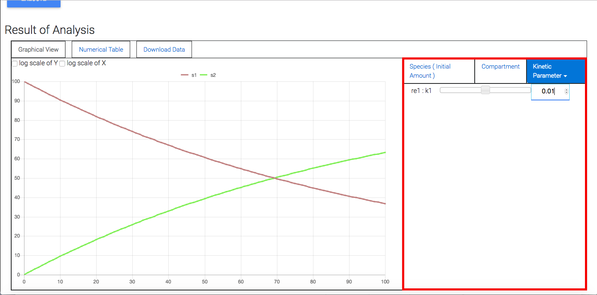

Change the value of model's parameter
You can change the model's parameter and execute the simulation. On the right of canvas in "Graphical View" there are 3 types of parameters, "Species(Initial Amount)", "Compartment" and "Kinetic Parameter" which includes "Local Parameters" and "Global Parameters". You can press the tab you want to change the parameter value. Using slider or changing the value in text box, you can change the model's parameter. Then the simulation is automatically executed and the result is visualized.
|

|
| Fig 1 : Setting form to change the model's parameter(red box) and execute simulation.
|